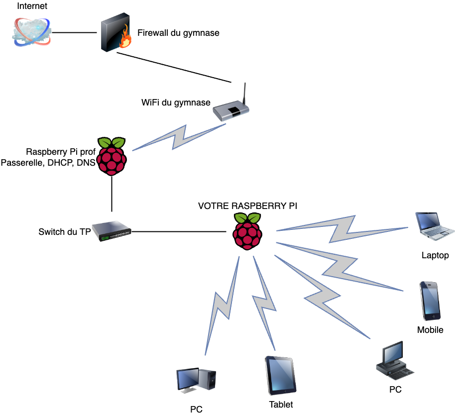
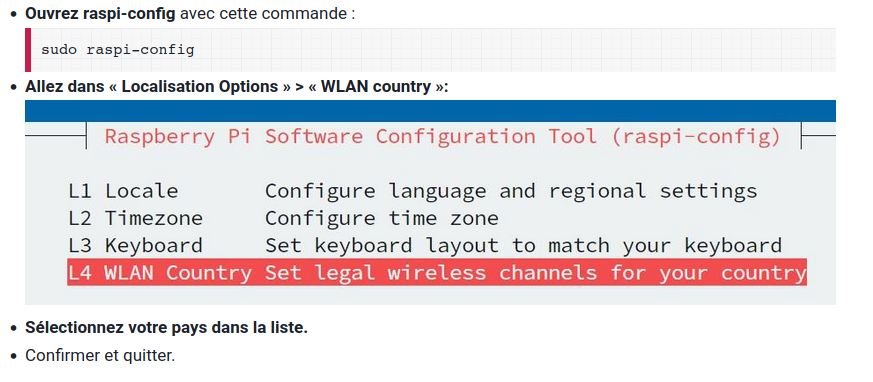
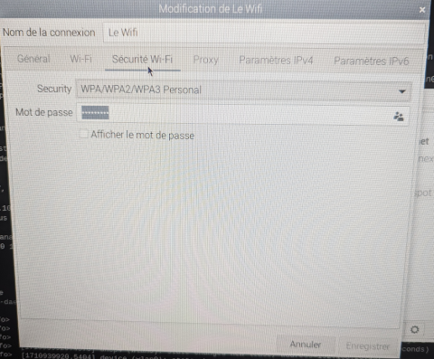

TP2-ARCH-04 : Services réseau#
Objectifs#
Faire d’un simple Raspberry Pi un point d’accès Wifi
Installer et configurer un serveur web
Créer une page HTML
Accéder aux pages des autres élèves
Partie 1 : Point d’accès Wifi#
On va faire du réseau de Raspberry Pi des points d’accès Wifi. Voici le schéma du projet :

Le Raspberry Pi va permettre à n’importe quel appareil (tablette, laptop, téléphone portable) de pouvoir accéder au réseau privé constitué de tous les Raspberry Pi.
Configuration d’un Access Point Wifi#
La configuration d’un point d’accès (Access Point) n’est pas compliquée, c’est exactement ce qui a été fait pour le Raspberry Pi Prof. Pour ce faire, votre Raspberry Pi devra être à le fois :
Un routeur (passerelle) entre le réseau filaire des RPi et les appareils connectés en Wifi
Un serveur DHCP pour permettre aux appareils connectés de posséder une adresse IP (réseau LAN privé)
Un serveur DNS pour traiter les requêtes Adresse IP -> Nom de machine
Marche à suivre#
Il faut d’abord configurer l’interface wlan0 (wifi) pour qu’elle se trouve en Suisse.

Configuration du hotspot#
Vous pouvez ajouter une interface hostspot depuis le menu réseau (double flèches en haut à droite). En suivant les éléments ci-dessous
Dans les paramètres de l’interface graphique des connexions réseau (icône “flèches” en haut à droite), vous devriez avoir la configuration qui ressemble à :

et à :

Testez ensuite avec votre téléphone que vous pouvez vous connecter au wifi !
Quelle configuration réseau avez-vous sur votre téléphone ? Adresse IP, masque ?
Partie 2 : Serveur Web#
Cette seconde partie permet d’installer, de configurer et de modifier un serveur HTTP (ou serveur web. Nous utiliserons apache qui est le serveur utilisé sur près d’un tiers des serveurs web du monde. C’est un logiciel open source et gratuit.
Installation Apache#
On commence par vérifier s’il y a des mises à jour avec
sudo apt updateOn installe Apache avec
sudo apt install apache2Et on démarre le serveur avec
sudo systemctl start apache2Depuis le Raspberry Pi, ouvrez un navigateur, puis l’adresse “localhost”, vous devriez voir une page d’accueil standard d’Apache ! Mieux encore, vous pouvez le faire depuis votre téléphone ! Comment ? avec l’adresse IP de votre Raspberry Pi!
Pour voir l’adresse de votre Raspberry Pi, tapez
ifconfig
Partie 3 : Modifier le serveur web#
L’idée de cette dernière partie est de modifier la page d’accueil de notre serveur web
Allons d’abord dans le dossier qui nous intéresse, la racine de notre site web, avec
cd /var/www/htmlPuis on regarde ce qu’il y a ici avec
ls. Le dossier ne contient qu’un fichier :index.html. C’est celui que vous pouvez lire en page d’accueilOn va en garder une copie au cas où, on fait
sudo mv index.html index.html2Enfin, cette simple commande va créer un nouveau fichier d’accueil du site. Vous n’avez pas le choix du nom du fichier
sudo touch index.htmlEnfin, pour ouvrir le fichier avec un éditeur, faites
sudo geany index.htmlDans Geany, écrivez une phrase qui vous identifie, par exemple
<h1>Bienvenue sur le site de Xenia et Nadia</h1>Enregistrez et affichez votre page sur votre téléphone !
Accédez à la page d’accueil de vos camarades !
Le fichier est en HTML (Hypertext Markup Langage). C’est un langage de description par balises (par exemple <h1> et </h1> permettent de mettre du texte en très gros). Le HTML est le seul langage utilisé sur les pages web des sites du monde entier puisque le seul accepté, compris et traduits par les navigateurs (comme firefox)
Pour suivre un tutorial de HTML, suivre le lien
Partie 4 : Attaque du serveur HTTP#
Une attaque par déni de service, ou DDOS, c’est bombarder un serveur de requêtes réseau pour le paralyser. Ce genre d’attaque est l’une des plus anciennes à avoir été utilisée sur le WWW.
Il existe quantité de logiciels pour ce faire. Utilisons un logiciel open source et gratuit disponible ici
Paralysez donc le RPi de vos camarades !